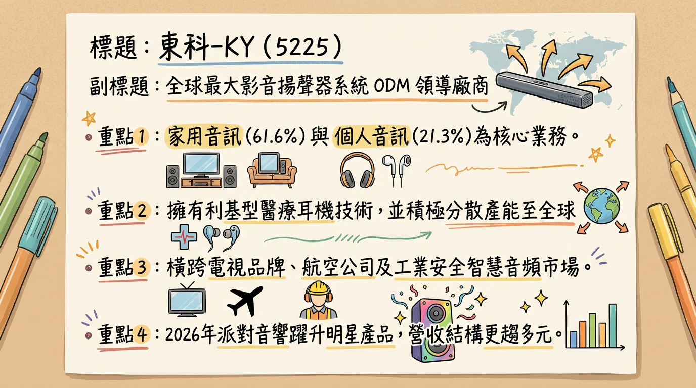

5225 東科-KY 深度研究報告
一句話摘要
全球影音揚聲器 ODM 龍頭，憑藉越南產能優勢與高毛利 Partybox 新動能，2026 年獲利重回成長軌道，伴隨 7% 高殖利率提供強勁下檔支撐。公司概覽
東科-KY 為全球最大的影音揚聲器系統代工大廠，擁有從揚聲器單體到整機組裝的垂直整合能力，長期深耕韓系、日系及美系一線品牌客戶。
業務產品線與營收結構（2025 H1）
| 產品線 | 營收佔比 | 核心內容 | 2026 展望 |
|---|---|---|---|
| 家用音訊系統 | 61.6% | Soundbar（聲霸）、家庭劇院 | 穩健成長，導入 AI 聲學技術 |
| 個人音訊系統 | 21.3% | 電競耳機、專業耳機、醫療耳機 | 受惠新創與醫療品牌訂單，比重預計提升 |
| 穿戴式音訊 | 8.0% | 智慧穿戴裝置音響 | 整合生醫應用 |
| 其他 | 9.1% | 喇叭單體、Partybox、利基型產品 | 2026 爆發點，Partybox 貢獻將顯著增加 |
核心競爭優勢
財務分析
近 6 個月營收趨勢表
| 月份 | 營收（億元） | 月增率 (MoM) | 年增率 (YoY) | 備註 |
|---|---|---|---|---|
| 2026/01 | 7.38 | +3.91% | -13.20% | 淡季回溫，受產線搬遷基期影響 |
| 2025/12 | 7.10 | +2.99% | -22.10% | 2025 年底淡季，客戶庫存調整 |
| 2025/11 | 6.89 | -12.4% | -10.60% | |
| 2025/10 | 7.87 | -39.9% | -27.50% | 搬遷廠區造成短期干擾 |
| 2025/09 | 13.09 | +0.7% | -1.40% | 出貨旺季高點 |
| 2025/08 | 13.00 | +28.8% | -3.34% |
年度關鍵財務指標
- 2025 實際值：營收 110.39 億元，EPS 10.26 元，毛利率 16.4%（歷史次高）。
- 2026 法人預估值：營收挑戰雙位數成長，EPS 預估落於 12.0~13.94 元。
法說會重點（2026/02/23）
券商觀點（目標價表格）
| 券商名稱 | 評等 | 目標價 | 預估 2026 EPS | 日期 |
|---|---|---|---|---|
| 法人圈綜合預估 | 正向/買進 | 145 ~ 159 元 | 13.20 元 (中位) | 2026/02/05 |
| CMoney 團隊 | 持有/高股息 | N/A | 13.20 元 | 2026/02/23 |
| 康和證券 | 買進 | 145 元 | 11.93 元 (2025) | 2025/08/19 |
財報深度分析
利潤率趨勢表格
| 年度/季度 | 毛利率 (%) | 營業利益率 (%) | 稅後淨利率 (%) | 狀態說明 |
|---|---|---|---|---|
| 2025 Q3 | 18.89% | 9.27% | 8.93% | 高毛利產品比重上升 |
| 2025 Q4 (E) | 14.50% | 5.20% | 4.80% | 搬遷費用一次性影響 |
| 2025 全年 | 16.40% | 6.70% | 6.00% | 獲利韌性極強 |
- 存貨分析：2025 Q3 存貨週轉天數為 31.42 天，優於 2024 年同期的 39.49 天，存貨管理極其效率。
- 資本支出：2026 年預計維持高檔（約 4-5 億元），主要投入越南二廠擴建與馬來西亞新廠量產，以應對美系客戶分散風險需求。
股權異動與結構
- 大股東結構：佳世達（2352）持股約 35%，為核心法人股東。
- CB 可轉債：東科一KY（52251）已於 2025/11/28 到期終止，目前無掛牌 CB，財務槓桿轉向穩健。
- 配息政策：2025 年盈餘預計配發 7.21 元 現金股利，配發率 70.2%，殖利率約 7.2%（以股價 100 元計算）。
產業分析（市場規模與競爭格局）
全球 Soundbar 市佔率（2025）
| 品牌商 | 市佔率 | 東科-KY 關係 |
|---|---|---|
| Samsung | 23.09% | 核心 ODM 合作夥伴 |
| VIZIO | 16.26% | 主要供應商 |
| Sony | 約 7.00% | 重點代工客戶 |
競爭對手比較表（2025 數據）
| 公司名稱 | 營收規模 (億) | 毛利率 (%) | EPS (元) | 核心優勢 |
|---|---|---|---|---|
| 東科-KY | 110.39 | 16.4% | 10.26 | Soundbar 全球龍頭、越南產能 > 60% |
| 美律 | ~ 450.00 | 13-14% | 6.5-7.0 (E) | 主攻手機/電競耳機、助聽器 |
| 國光電器 (陸) | N/A | 約 11-13% | N/A | 規模大但受地緣政治關稅壓力大 |
近期催化劑
- 利多事件：
2. 越南輸美稅率傳出由 20% 降至 15%，提升毛利空間。
3. 美系兩大零售巨頭 Soundbar/Partybox 訂單於 2026 Q1 開始放量。
- 利空事件：
2. 2025 Q4 搬遷費用導致基期數據較弱。
⭐ 成長動能時間軸
- 2025/Q4：完成中國/丹麥廠搬遷，開始實施自動化生產。
- 2026/Q1：美系零售巨頭新訂單正式上架；開始應用 Qwen2.5 輕量版 AI 音箱模組。
- 2026/Q2：越南二廠全面投產，產能預計提升 15-20%。
- 2026/H2：Partybox 明星產品進入出貨高峰；航空耳機代工若成功則開始放量。
- 2026 全年：馬來西亞新廠進入試產與量產，滿足歐洲精品客戶需求。
2026 展望
- 成長動能：
* 客戶分散：降低對單一韓系客戶依賴，新增美系與中系（北美熱銷品牌）新單。
* 效率提升：搬遷後的自動化與租金節省效益於 2026 全面顯現。
- 風險：
* 消費性電子終端需求若回溫速度不如預期。
投資結論
* 保守目標：120 元（給予 9x PE）
* 積極目標：150 元（給予 11x PE，基於 2026 EPS 13.5 元預估）
本報告由 AI 自動產生，資料來源為公開網路資訊，僅供參考，不構成投資建議。產生時間：2026-03-02 19:25
📊 資訊卡
